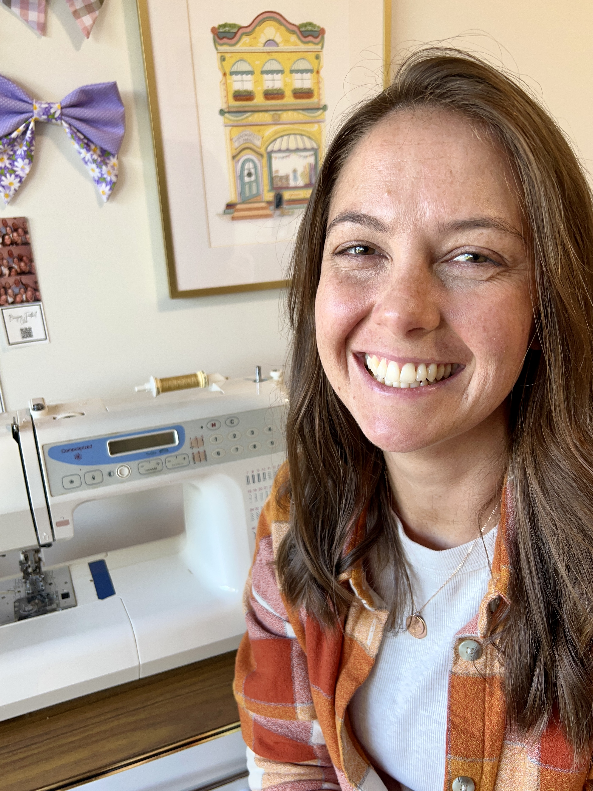

Great projects are out there.
Finding them shouldn't take all day.
Make It Matter is a growing directory of Australian charity craft projects. With real detail on skill level, time commitment, and how to get involved, you can be confident your making will matter.
Find a cause you care about...
🐾
Animal Welfare
🤝
Community Services
🆘
Disaster Relief
Use your skills for good...
🧵
Sewing
🧶
Knitting
🧶
Crochet

The maker behind Make It Matter
👋🏻 I'm Andie. I've always loved crafts of all kinds (sewing, knitting, crochet, and even recently woodworking). During some recent time off work, I wanted to find a way to keep building my craft skills while making something meaningful, rather than just creating more things to clutter my home. I learnt a lot during this time and made this tool to share what I learnt with others. I hope it helps!
Follow @andiecrafted on Instagram